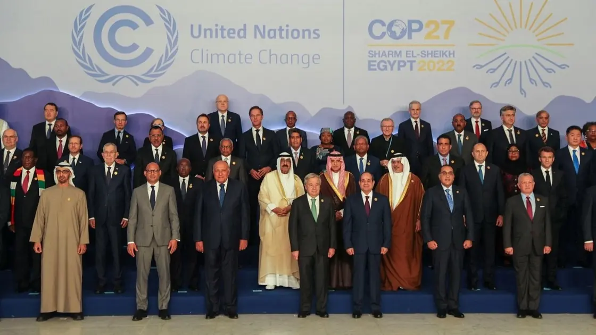

World Leaders Meet for Climate Summit
15 Nov, 2025

World leaders gathered in the Egyptian resort town of Sharm el-Sheikh on Monday for a family photograph at this year’s annual UN climate conference.
Discussions at COP27 will be held on how to deal with a worsening problem that scientists’ call Earth’s biggest challenge.
Much of the focus will be on national leaders telling their stories of being devastated by climate disasters, culminating on Tuesday with a speech by Pakistan Prime Minister Muhammad Sharif, whose country’s summer floods caused at least $40 billion in damage and displaced millions of people.
Read More
National Team Wins Championship
12 Nov, 2025

In front of a record-setting crowd at Kezar Stadium, Hickory FC edged El Farolito 3-2 in a dramatic NPSL National Championship on Saturday night. Nearly 1,000 fans packed the historic venue, which once hosted the city’s NFL teams, to witness an intense battle that saw momentum swings, standout performances, and late-game drama.
Hickory FC, the back-to-back Southeast Conference Champions from North Carolina, claimed their first national title in just their second year of existence — a remarkable feat for the fledgling club.
The match opened with high energy and physicality. El Farolito looked vulnerable early, nearly conceding on a Hickory corner before the 10-minute mark. Tensions flared shortly after, with yellow cards issued to both sides around the 15th minute as the final lived up to its billing: a passionate crowd, high stakes, and two worthy finalists.
Read More
New Smartphone Sets Record Sales
10 Nov, 2025
Samsung Electronics announced that its Galaxy S23 Series, which launched for sale globally on 17 February, recorded higher sales worldwide than the previous Galaxy S22 series in the same period.
At a press conference held during Unpacked on 1 February, TM Roh, President and Head of Mobile eXperience Business at Samsung Electronics, said that though we aimed to grow the sales of the S23 Series over the S22 by more than double-digits, we achieved better-than-expected results by recording increased sales by up to 70% year-on-year worldwide for 47 days since the launch of the S23 Series.
In particular, the MENA region achieved a high proportion of premium sales — 1.5 times higher sales than the S22. This achievement is attributed to the S23 Series’ powerful performance, unmatched camera capabilities and unique product experience.
Read More